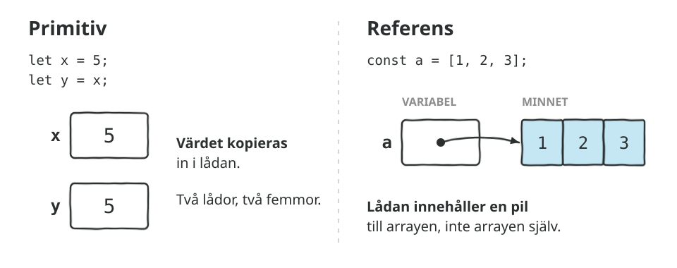
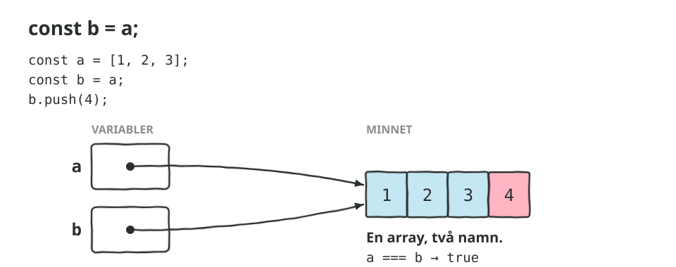
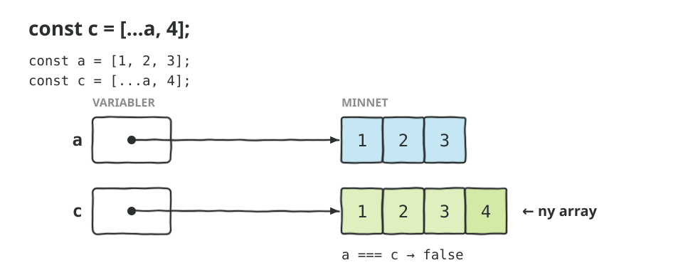
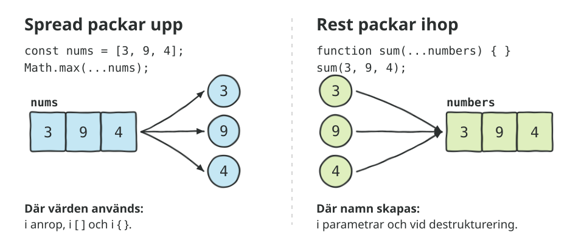
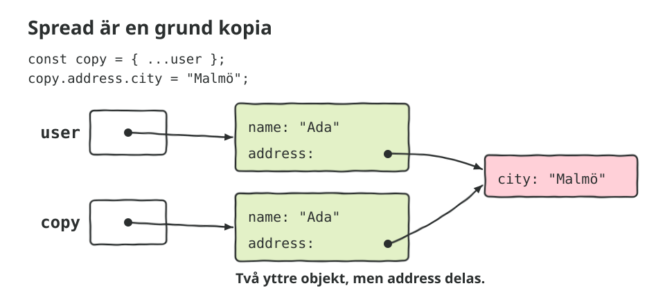
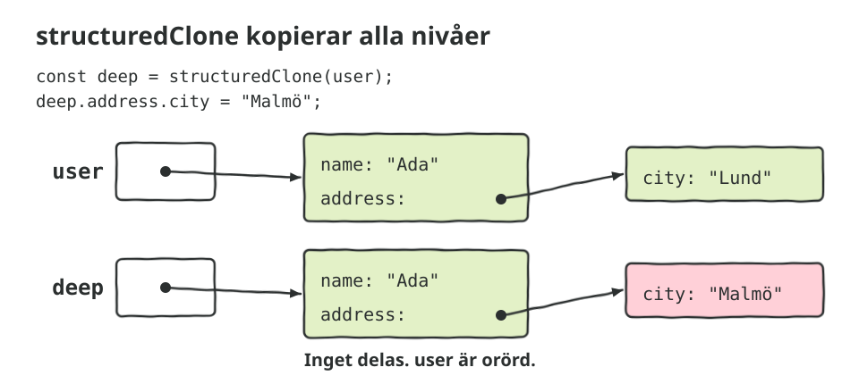

Värden och referenser
Del 1 av 4 · Mutable, immutable och scope
Allt händer i konsolen. Öppna DevTools (F12) och välj Console. Gissa vad som loggas innan du sparar.
- Primitiver kopieras.
y = xger en ny låda med samma värde. - Arrayer och objekt delas.
b = akopierar pilen, inte arrayen. - Mutable och immutable. Strängar går inte att ändra, arrayer går.
- Spread på arrayer.
[...numbers]ger en ny array. - Spread på objekt.
{ ...ada, age: 37 }. Sist vinner. - Rest. Samma
...men tvärtom: packar ihop. - Metoder.
sortellertoSorted? - Sidoeffekter. Funktioner som ändrar det de får.
- Fällan. Spread kopierar bara första nivån.
- Object.freeze. Också bara första nivån.
Skisser





